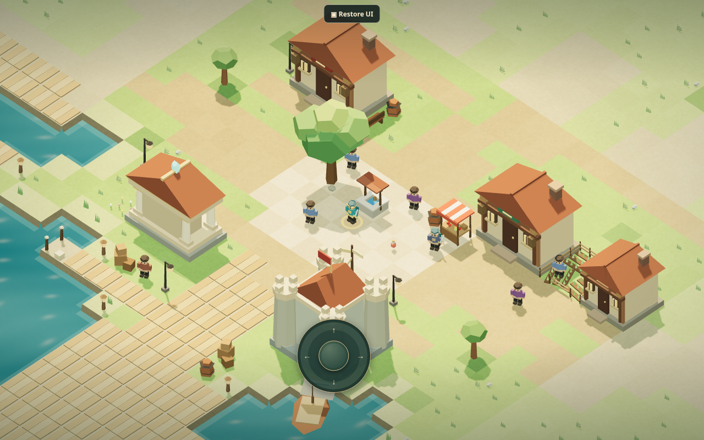
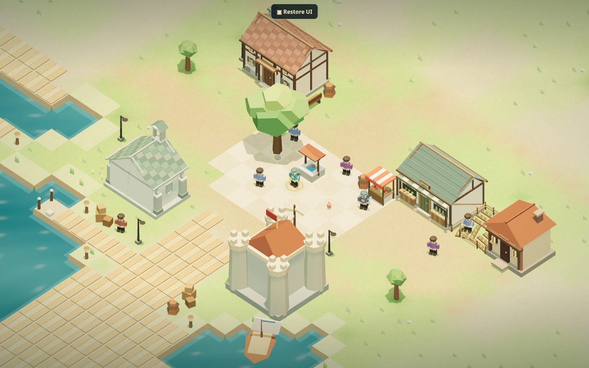

EternalBliss: live R15.56 and the release candidate
Actual Chromium captures at matching fixture coordinates, viewport and summer clock. No generated artwork or image retouching. The phone fight intentionally compares the original overhead combat presentation with the candidate's first-person presentation.
Desktop views: 1280 × 800. Phone fight: 390 × 844 emulation. These images are visual evidence, not physical-phone performance or human release approval.
Before · live R15.56 · 77b0b43
After · PR #24 validation candidate
Candidate HTML SHA-256: b0c9cd4243fe595ebcc002d66a939390e8ffd88ba8445452bdb7e6b1c70c26dd
Detailed asset before/after sheets and test limitations are linked from the release-readiness report. Existing plots, residents and services are retained. The Alerith reference was unavailable, so no reference-fidelity claim is made.
Release-readiness report · Validation checkpoint